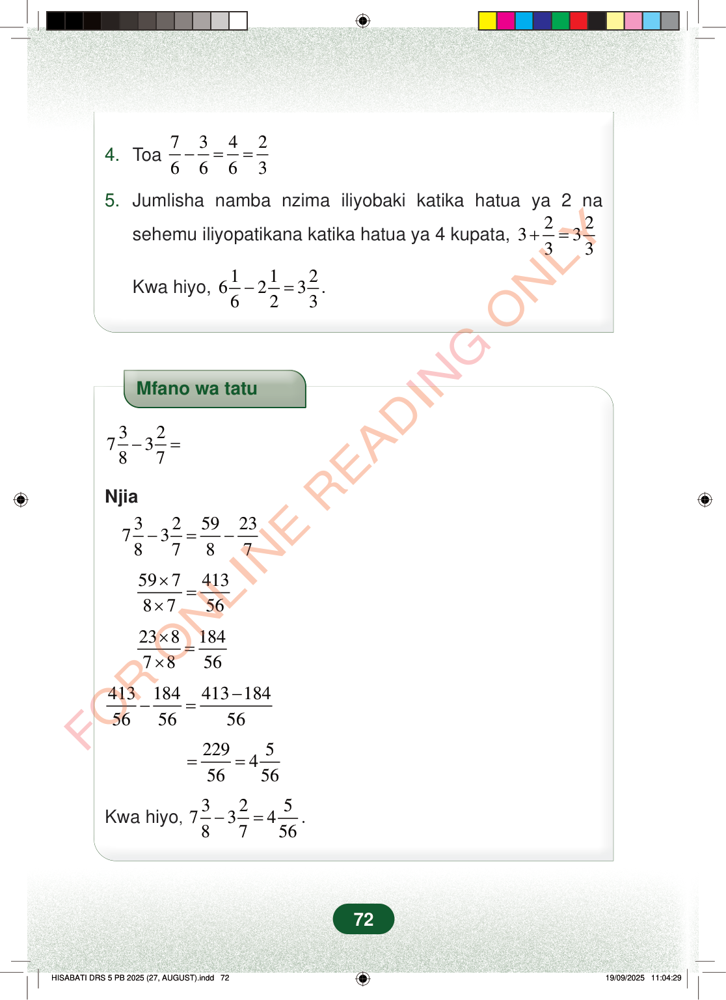

4.Toa73426663−==5.Jumlisha namba nzima iliyobaki katika hatua ya 2 nasehemu iliyopatikana katika hatua ya 4 kupata,223333+=Kwa hiyo,112623623−=.Mfano wa tatu327387−=Njia325923738787−=−5974138756×=×2381847856×=×413184413184565656−−=229545656==Kwa hiyo,3257348756−=.724. Toa 7 3 4 2 6 6 6 3 − = =
5. Jumlisha namba nzima iliyobaki katika hatua ya 2 na
sehemu iliyopatikana katika hatua ya 4 kupata, 2 2 3 3 3 3 + =
Kwa hiyo, 1 1 2 6 2 3 6 2 3 − = .
Mfano wa tatu
3 2 7 3 8 7 − =
Njia
3 2 59 23 7 3 8 7 8 7 − = −
59 7 413 8 7 56 × = ×
23 8 184 7 8 56 × = ×
413 184 413 184 56 56 56 − − =
229 5 4 56 56 = =
Kwa hiyo , 3 2 5 7 3 4 8 7 56 − = .
72
Hatua ya 4 na 5 ya kutoa namba mchanganyiko. Inaonyesha 7/6 - 3/6 = 4/6 = 2/3, kisha 6 1/6 - 2 1/2 = 3 2/3.4.Toa <math><mrow><mfrac><mn>7</mn><mn>6</mn></mfrac><mo>−</mo><mfrac><mn>3</mn><mn>6</mn></mfrac><mo>=</mo><mfrac><mn>4</mn><mn>6</mn></mfrac><mo>=</mo><mfrac><mn>2</mn><mn>3</mn></mfrac></mrow></math>5.Jumlisha namba nzima iliyobaki katika hatua ya 2 na sehemu iliyopatikana katika hatua ya 4 kupata, <math><mrow><mn>3</mn><mo>+</mo><mfrac><mn>2</mn><mn>3</mn></mfrac><mo>=</mo><mn>3</mn><mfrac><mn>2</mn><mn>3</mn></mfrac></mrow></math>Kwa hiyo, <math><mrow><mn>6</mn><mfrac><mn>1</mn><mn>6</mn></mfrac><mo>−</mo><mn>2</mn><mfrac><mn>1</mn><mn>2</mn></mfrac><mo>=</mo><mn>3</mn><mfrac><mn>2</mn><mn>3</mn></mfrac></mrow></math>.Mfano wa tatu wa kutoa 7 3/8 - 3 2/7. Hatua zinaonyesha kubadili kuwa 59/8 na 23/7, kupata madhehebu 56, kisha jibu 4 5/56.Mfano wa tatu<math><mrow><mn>7</mn><mfrac><mn>3</mn><mn>8</mn></mfrac><mo>−</mo><mn>3</mn><mfrac><mn>2</mn><mn>7</mn></mfrac><mo>=</mo></mrow></math>Njia<math><mrow><mn>7</mn><mfrac><mn>3</mn><mn>8</mn></mfrac><mo>−</mo><mn>3</mn><mfrac><mn>2</mn><mn>7</mn></mfrac><mo>=</mo><mfrac><mn>59</mn><mn>8</mn></mfrac><mo>−</mo><mfrac><mn>23</mn><mn>7</mn></mfrac></mrow></math><math><mrow><mfrac><mrow><mn>59</mn><mo>×</mo><mn>7</mn></mrow><mrow><mn>8</mn><mo>×</mo><mn>7</mn></mrow></mfrac><mo>=</mo><mfrac><mn>413</mn><mn>56</mn></mfrac></mrow></math><math><mrow><mfrac><mrow><mn>23</mn><mo>×</mo><mn>8</mn></mrow><mrow><mn>7</mn><mo>×</mo><mn>8</mn></mrow></mfrac><mo>=</mo><mfrac><mn>184</mn><mn>56</mn></mfrac></mrow></math><math><mrow><mfrac><mn>413</mn><mn>56</mn></mfrac><mo>−</mo><mfrac><mn>184</mn><mn>56</mn></mfrac><mo>=</mo><mfrac><mrow><mn>413</mn><mo>−</mo><mn>184</mn></mrow><mn>56</mn></mfrac></mrow></math><math><mrow><mo>=</mo><mfrac><mn>229</mn><mn>56</mn></mfrac><mo>=</mo><mn>4</mn><mfrac><mn>5</mn><mn>56</mn></mfrac></mrow></math>Kwa hiyo, <math><mrow><mn>7</mn><mfrac><mn>3</mn><mn>8</mn></mfrac><mo>−</mo><mn>3</mn><mfrac><mn>2</mn><mn>7</mn></mfrac><mo>=</mo><mn>4</mn><mfrac><mn>5</mn><mn>56</mn></mfrac></mrow></math>.